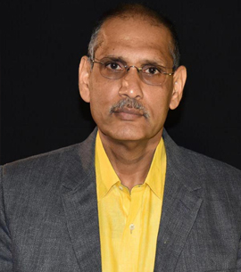

Prof.Mukti Kanta Mishra
Co-founder&president of Centurion University odisha

A Photograph of CUTM vice-persident
About
Dr. Mishra in his endeavor to explore entrepreneurial capability, as a Director of Consulting Firm along with
three professors had taken over the management of one Engineering College in 2005. The engineering college
(Jagannath Institute for Technology & Management (JITM), Paralakhemundi) located in a remote rural area of the
poorest district of Orissa, is All India Council for Technical Education (AICTE) approved. At that time, it had
seven academic departments and 420 seats, and was faced with reduced intake, poor academic performance and
placement problems. Dr. Mishra has taken it as a mission of life and real time personal social responsibility to
turn around this college and place it at a national level through qualitative improvement in curricular,
co-curricular and extra-curricular activities.
Dr Mishra’s career started in the corporate sector, where he has worked for over 18 years in various positions,
the most noteworthy of them being in the Marketing Department at Hindustan Petroleum Corporation Ltd., India (a
fortune 500 MNC), The Industrial Development Corporation of Orissa Limited, India and at Kinhill Engineers Pvt.
Ltd., Melbourne, Australia. The responsibilities included branding, strategy, pricing, quality control, CSR
issues and finally Industrial Relation problems. This provided an analytical framework and expertise to
comprehend the existing problems and issues and anticipate the future threats.
Affliations
- Associate Auditor by the Registrar of Certified Auditors, Quality Society of Australasia – an International
body for ISO Auditors.
- Life member of Quality Society of Australasia
- Provisional auditor of the International Register of Certified Auditors (IRCA, UK)
- Permanent professional member of Indian Chamber of Commerce and also Member of the Utkal Chamber of Commerce
and Industries
- Associate Member at the Institute of Directors, New Delhi
- Chairman, Governing Board of Orissa State Housing Board, Government of Orissa
- Member, Management Committee, Orissa Electricity Regulatory Commission
Experience
Jan 2002 till 2004, Was awarded APA Scholarship to pursue PhD in 2002.
Achievements
- The scholarship tenure was for 42 months but Dr. Mishra completed within 24 months which is an exemplary
achievement for Victoria University.
- The Thesis was passed without any further correction for which the Post-Graduate Research Committee
congratulated Dr. Mishra
- While pursuing PhD, Dr. Mishra was involved in extensive teaching in International MBA programme
Dr. Mishra was advising the Faculty of Business and Law, VUT in formulating strategy for expansion into
ASEAN markets.
- October 1997 till 2002, Worked at Hindustan Petroleum Corporation Ltd, Ministry of Petroleum (A Government
of India Corporation and fortune 500 Corporation) in the Marketing Division, Bhubaneswar Region as Senior
Executive – Marketing for the entire state of Orissa.
- Direct supervision of tenders for securing business from various Airlines (Domestic and International
Carriers) and Major Industrial Houses (both PSUs and Private sector) and successful negotiation to secure
the business
Major procurements for the Corporation and participation in Bids Committee to finalize Vendors for HPCL
Member in the Logistics Committee negotiating Transport Contracts for the entire Oil Industry for three
years involving 450 Transport Companies from all over the Country
Formulated marketing strategies as the Leader of various SBUs/ Profit Centres
Marketing of LPG/ CNG in retail consumer trade and entire range of petroleum products for all Industrial
Customers and Aviation Sectors following organisational restructuring and segregation of various departments
Branding of HP Products, Consumer Surveys and designing Culture – Customer Sensitive advertisements
- Handled legal matters pertaining to consumer cases and civil suits/ cases.
October 1996 to September 1997, Deputy General Manager (Commercial/ Marketing) Industrial Development
Corporation of Orissa Limited (IDCOL), a Government of Orissa Conglomerate, India (On Secondment). IDCOL is
engaged in production and marketing products such as cement (dry processing), tough iron rod, spun pipe,
cable, boiler pipes, jute products, yarns, Ferro chrome /Ferro alloys, pig iron (foundry), and also involved
in mining such as chrome ore, limestone, etc. through various units. IDCOL has also a software-developing
unit, which develops and markets customized software for various Government units.
- Ensured continuous and uninterrupted supply of petroleum products to various retailing points and industries
throughout India. He has had to develop marketing strategies for petroleum products such as Motor Spirit (87
and 93 octane) (MS), High Speed Diesel (HSD), Furnace oil (FO), Low sulphur High Speed (LSHS) Naphtha,
Bitumen, Liquefied Petroleum Gas (LPG), all grades of lubricants, commissioning of Retail Outlets, LPG
Agencies, Superior Kerosene Oil (SKO) Dealerships.
Prepared business plans including forecasting of sales, revenues, costs, discounted cash flow analysis, etc.
He was also responsible for developing various innovative ideas in advertising of lubricants.
Merchandised various products in the retail network of HPCL.
- September 1986 to December 1987, Utkal University, Orissa, Dr. Mishra held the position as University
Research Scholar in the Post Graduate Department of Analytical and Applied Economics and carried out a study
on the “Role of Commercial Banks in the Economic Development of Orissa”. During this period he was
extensively involved in teaching Monetary Economics and International Monetary Management to Postgraduate
Students. While carrying out the study he interacted with all Public Sector Banks operating in the state of
Orissa, various Government Departments, industrial houses and small scale/ cottage industries etc. This was
an exploratory qualitative study.
- Sir Achievements is more here i have cover a little bit
Publications
Resources
Learn more about Prof.Mukti Kanta Mishra and his work: